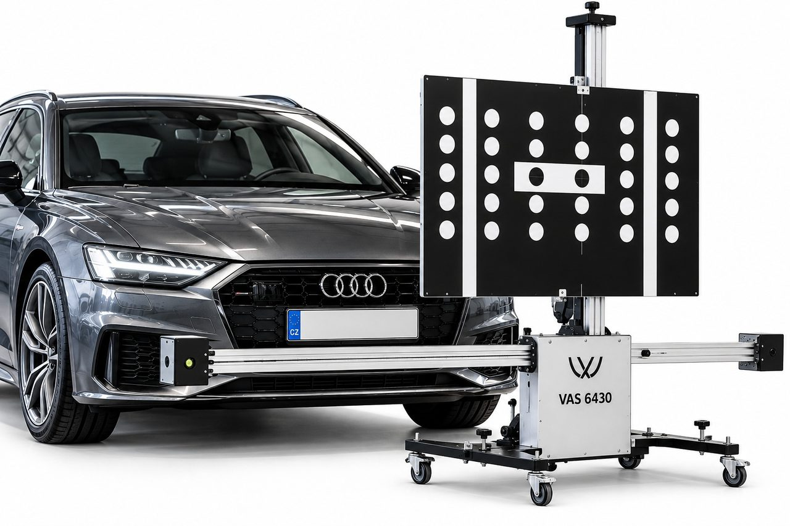

Seřízení a kalibrace jízdních asistentů

J&S servis ve Statenicích se od roku 1994 specializuje na servis vozidel Volkswagen, Audi, Škoda, SEAT a CUPRA.
Provádíme odbornou diagnostiku, seřízení, základní nastavení a kalibraci asistenčních systémů řidiče (ADAS) pomocí diagnostického systému ODIS a specializovaného kalibračního vybavení podle technologických postupů výrobce vozidla.
- Specializace na pokročilé asistenty VW Group
- Diagnostika ODIS a profesionální kalibrace
- Postupy výrobce a více než 30 let zkušeností
Jak jednotlivé systémy fungují?
Asistenční systémy pomáhají řidiči při jízdě, parkování i sledování okolí vozidla. Rozbalením jednotlivých položek zjistíte, k čemu slouží, jak se projevují v běžném provozu a kdy je vhodná jejich odborná kontrola. Přehled zahrnuje také související snímače a zobrazovací technologie.
Konkrétní funkce, podmínky aktivace a možnosti nastavení se liší podle značky, modelu, roku výroby a výbavy. Následující přehled vysvětluje jejich obecný princip; pro ovládání a provozní omezení konkrétního vozidla je rozhodující návod k obsluze. Obchodní názvy se mezi značkami liší a obdobné funkce mohou být označeny jinak. Asistenční systémy nenahrazují pozornost ani odpovědnost řidiče.
ACC – adaptivní tempomat
K čemu slouží
ACC pomáhá udržovat nastavenou rychlost a zvolený odstup od rozpoznaného vozidla jedoucího před vámi.
Jak se chová při jízdě
Pokud vozidlo před vámi zpomalí, ACC může snížit rychlost. Jakmile se prostor uvolní, může znovu zrychlit až na nastavenou hodnotu. Vybraná provedení umožňují také dobrzdění do zastavení a podporu následného rozjezdu. Tyto funkce závisejí na konkrétním systému a převodovce.
Co je důležité vědět
ACC není zárukou zabránění nehodě. Řidič musí být připraven brzdit a reagovat na změny provozu. Zakrytý snímač nebo nepříznivé podmínky mohou jeho dostupnost omezit.
Kdy doporučujeme kontrolu
Při opakované nedostupnosti, chybovém hlášení nebo neobvyklých reakcích. Potřebu nastavení či kalibrace po opravě určujeme podle konkrétního vozidla a předpisu výrobce.
Front Assist – sledování prostoru před vozidlem a nouzové brzdění
K čemu slouží
Front Assist pomáhá rozpoznat riziko střetu před vozidlem a upozornit řidiče na nutnost reagovat. Podle provedení může podpořit brzdění nebo zahájit automatické nouzové brzdění.
Jak se chová při jízdě
Při vyhodnoceném nebezpečí se může objevit optická a akustická výstraha, u některých systémů také varovný brzdný impulz. Pokud řidič nereaguje dostatečně, může následovat brzdný zásah. Rozpoznávání chodců, cyklistů a dalších situací závisí na generaci systému a výbavě.
Co je důležité vědět
Front Assist může pracovat i tehdy, když není zapnutá regulace rychlosti ACC. Nedokáže však rozpoznat každé nebezpečí a nezaručuje zabránění střetu. Na výstrahu je nutné reagovat; automatický zásah není náhradou včasného brzdění řidiče.
Kdy doporučujeme kontrolu
Při chybovém hlášení, opakovaných neodůvodněných výstrahách nebo neobvyklých brzdných zásazích.
Lane Assist – asistent udržování jízdního pruhu
K čemu slouží
Lane Assist pomocí přední kamery vyhodnocuje rozpoznané hranice jízdního pruhu a pomáhá omezit jeho neúmyslné opuštění.
Jak se chová při jízdě
Pokud se vozidlo začne přibližovat k rozpoznané hranici pruhu, může systém provést korekční zásah do řízení. Některá provedení využívají také další upozornění. Vybrané systémy nebo režimy poskytují i průběžnou podporu vedení v pruhu. Při změně pruhu se zapnutým ukazatelem směru systém zpravidla vyhodnotí manévr jako úmyslný; případná spolupráce s hlídáním sousedního pruhu však může i tehdy upozornit na nebezpečí.
Co je důležité vědět
Funkce závisí na rozpoznání hranic pruhu a na provozních podmínkách. Samotný název Lane Assist neznamená trvalé vedení uprostřed pruhu ani autonomní řízení. Řidič musí vozidlo průběžně řídit.
Kdy doporučujeme kontrolu
Při opakované nedostupnosti nebo neobvyklých korekcích řízení. Po výměně čelního skla či zásahu do kamery ověřujeme předepsané navazující úkony.
Side Assist – asistent změny jízdního pruhu
K čemu slouží
Side Assist sleduje prostor vedle vozidla a za ním. Pomáhá upozornit na rozpoznaná vozidla v mrtvém úhlu nebo na vozidla, která se zezadu rychle přibližují.
Jak se chová při jízdě
Pokud systém vyhodnotí rozpoznané vozidlo jako relevantní pro změnu pruhu, upozorní řidiče světelnou signalizací na příslušné straně, zpravidla ve vnějším zpětném zrcátku. Pokud řidič zapne ukazatel směru a systém vyhodnotí změnu pruhu jako rizikovou, může výstraha výrazně blikat. U vybraných vozidel může spolupráce s dalšími asistenty zahrnovat také korekční zásah do řízení.
Co je důležité vědět
Výstraha nenahrazuje kontrolu zrcátek a prostoru vedle vozidla. Side Assist také nelze automaticky ztotožňovat s asistentem vyparkování nebo výstrahou při vystupování.
Kdy doporučujeme kontrolu
Při chybových hlášeních, opakovaně neobvyklé signalizaci nebo po poškození oblasti snímačů.
Rear View – zadní parkovací kamera
K čemu slouží
Zadní kamera přenáší na displej obraz prostoru za vozidlem a usnadňuje orientaci při couvání a parkování.
Jak se chová při manévrování
Obraz se obvykle aktivuje po zařazení zpátečky. Podle výbavy může obsahovat pomocné čáry nebo další režimy zobrazení. U některých provedení se naváděcí čáry mění podle natočení volantu.
Co je důležité vědět
Kamera nenahrazuje přímou kontrolu okolí. Samotný kamerový obraz neznamená, že vozidlo automaticky řídí nebo brzdí. Obraz je orientační pomůcka, nikoli přesné měřidlo odstupu. Zobrazení může být omezené znečištěním nebo špatnou viditelností.
Kdy doporučujeme kontrolu
Při výpadku obrazu, jeho neobvyklém natočení nebo nesouladu naváděcích čar. Potřebu kalibrace posuzujeme podle typu kamerového systému.
Area View – kamerový přehled okolí vozidla
K čemu slouží
Area View využívá několik kamer k zobrazení bezprostředního okolí vozidla. Typické provedení se čtyřmi kamerami vytváří také složený pohled shora.
Jak se chová při manévrování
Řidič může podle výbavy volit mezi jednotlivými pohledy a lépe posoudit polohu vozidla vůči obrubníku, parkovacím čarám nebo okolním překážkám.
Co je důležité vědět
Pohled shora vzniká výpočtovým spojením obrazů; nejde o skutečný záběr z kamery nad vozidlem. Zobrazení nenahrazuje přímou kontrolu okolí a samo o sobě nepotvrzuje funkci automatického parkování či brzdění.
Kdy doporučujeme kontrolu
Při výpadku některého pohledu nebo neobvyklé návaznosti obrazu mezi kamerami. Závadu nelze určit pouze podle obrazu; potřebu kalibrace ověřujeme diagnostikou a podle předpisu výrobce.
Night Vision – systém nočního vidění
K čemu slouží
Systém nočního vidění využívá termokameru k zobrazení tepelného obrazu prostoru před vozidlem. Podle generace a výbavy pomáhá upozornit na rozpoznané osoby nebo větší zvířata.
Jak se chová při jízdě
Na přístrojovém displeji se zobrazuje tepelný obraz. Rozpoznané objekty mohou být zvýrazněny a při vyhodnoceném nebezpečí může následovat optická nebo zvuková výstraha. Některá provedení spolupracují také se světlomety nebo head-up displejem.
Co je důležité vědět
Funkci ovlivňuje stav kamery, její správné usazení a průhlednost ochranného okénka. Při zhoršeném obrazu proto kontrolujeme také znečištění nebo poškození této oblasti. Rozsah opravy určujeme podle zjištěné příčiny a konkrétního provedení systému.
Možnosti rozpoznávání a varování mají své provozní meze. Noční vidění nenahrazuje správné osvětlení vozidla ani pozorné sledování vozovky.
Kdy doporučujeme kontrolu
Při chybovém hlášení, výpadku či výrazném zhoršení obrazu nebo po poškození v oblasti kamery.
Po zásahu do kamery, jejího uchycení nebo přední části vozu ověřujeme správné ustavení a předepsané navazující úkony. Potřebu kalibrace po opravách podvozku či seřízení geometrie posuzujeme podle konkrétního modelu a postupu výrobce.
Laserový skener a další snímače – jak vozidlo sleduje okolí
K čemu slouží
Laserový skener, označovaný také jako lidar, měří pomocí odražených světelných impulzů vzdálenost a prostorové uspořádání rozpoznaných objektů. U příslušně vybavených vozidel doplňuje informace z radarů a kamer.
Jak se projevuje při jízdě
Skener zpravidla nemá vlastní samostatné ovládání. Jeho údaje využívají navazující asistenční funkce. Při omezení snímače může vozidlo oznámit také omezenou dostupnost některého z těchto asistentů.
Co je důležité vědět
Laserový skener není součástí každého vozu a není totožný s radarem. Jednotlivé druhy snímačů, včetně radarů, kamer a ultrazvukových snímačů, mají různé úlohy a mohou se vzájemně doplňovat. Jejich přítomnost sama o sobě neznamená možnost autonomní jízdy.
Kdy doporučujeme kontrolu
Při hlášení závady nebo po poškození oblasti snímače. Konkrétní návaznost na asistenční funkce a požadované servisní úkony ověřujeme podle výbavy vozidla.
Head-up Display (HUD) – informace v zorném poli řidiče
K čemu slouží
Head-up displej zobrazuje vybrané jízdní informace v zorném poli řidiče. Podle výbavy může ukazovat rychlost, navigační pokyny, dopravní značky nebo upozornění asistenčních systémů.
Jak se chová při jízdě
Řidič může sledovat důležité údaje s menším odkloněním pohledu od vozovky. Vybraná provedení s rozšířenou realitou mohou promítat navigační či asistenční symboly tak, aby vizuálně navazovaly na dění před vozidlem.
Co je důležité vědět
HUD je zobrazovací systém. Sám nerozpoznává překážky ani neovládá vozidlo. Zobrazené informace a možnosti uživatelského nastavení závisejí na konkrétním provedení. U systémů promítajících na čelní sklo je důležité také jeho správné provedení pro daný projekční systém; zdvojený obraz proto nemusí být pouze otázkou nastavení.
Kdy doporučujeme kontrolu
Při výpadku, zdvojení, deformaci nebo nesprávné poloze obrazu. Rozlišujeme běžné uživatelské nastavení od odborného servisního nastavení či kalibrace, pokud je výrobce předepisuje.
Další funkce a výbava
Digitální kompas – zobrazení světových stran
K čemu slouží
U vozů s kompasem ve vnitřním zpětném zrcátku se zobrazuje orientační údaj o směru jízdy. Způsob ovládání a nastavení závisí na konkrétním provedení.
Když údaj chybí nebo neodpovídá směru jízdy
Pokud kompas ukazuje nesprávný směr nebo místo světové strany zůstává písmeno C, může být potřeba kalibrace. Při prázdném displeji nejprve podle návodu ověřte, zda není zobrazení vypnuté.
Kdy doporučujeme kontrolu
Pokud problém přetrvává, sdělte servisu přesný projev a kdy vznikl. Důležitou informací je také předchozí odpojení akumulátoru nebo výměna zrcátka.
Kontrola se zaměřuje na správné nastavení kompasu, napájení a podle provedení také na potřebu kalibrace. Přesný postup nastavování se řídí návodem pro konkrétní vozidlo.
Bezdotykové otevírání zavazadlového prostoru
K čemu slouží
Bezdotykové otevírání umožňuje otevřít zavazadlový prostor pohybem nohy pod zadním nárazníkem. Podle značky se používá například označení Easy Open nebo Virtual Pedal. Funkce závisí na výbavě vozidla a rozpoznání oprávněného klíče.
Jak funkci správně používat
U řady provedení se používá jeden plynulý pohyb nohy směrem pod nárazník a zpět. Některé novější systémy rozpoznávají jiné gesto. Přesné místo a způsob ovládání proto určujte podle návodu svého vozu.
Po gestu nohu vraťte zpět a ustupte, aby mělo víko dostatek prostoru. Přidržování nohy pod nárazníkem nebo opakování pohybů bez přestávky nemusí vést k rozpoznání požadavku. Před dalším pokusem krátce vyčkejte.
Co může reakci omezit
Nejdříve ověřte, zda je funkce aktivovaná, jsou splněné její provozní podmínky a vůz rozpoznává klíč za vozidlem.
Reakci mohou ovlivnit nečistoty, zbytky posypové soli, voda nebo rušení komunikace s klíčem. U některých systémů existuje také krátké ochranné omezení po zavření víka nebo při určitých vnějších podmínkách.
Při mytí a práci u zadního nárazníku dodržujte pokyny výrobce k deaktivaci funkce. Pohyb v oblasti snímačů nebo proud vody mohou u některých provedení vyvolat nechtěný pohyb víka.
Kdy doporučujeme kontrolu
Pokud se potíže opakují i při správném ovládání, funkce přestala pracovat po opravě zadní části vozu nebo se objevují nechtěné reakce.
Servisu sdělte, zda lze víko ovládat tlačítkem či dálkovým klíčem a za jakých okolností gesto nefunguje. Podle výsledku se prověřuje rozpoznání klíče, nastavení, snímací oblast a související části systému. Samotné nereagující gesto neurčuje vadný díl.
Kontrola a kalibrace podle konkrétního vozidla
Podle modelu a výbavy provádíme diagnostickou kontrolu, předepsané nastavení nebo kalibraci podporovaných systémů. Konkrétní rozsah ověřujeme podle vozidla a aktuálních pokynů výrobce. Samotné chybové hlášení nemusí znamenat nutnost kalibrace ani výměny snímače; nejprve je třeba určit příčinu závady.
Kdy může být kalibrace nutná?
Kalibrace nebo základní nastavení může být předepsáno zejména po výměně čelního skla, kamery, radaru nebo jiného snímače, po opravách karoserie, zásazích do podvozku nebo seřízení geometrie náprav.
Potřeba kalibrace vždy závisí na konkrétním systému a technologickém postupu výrobce.
Postup diagnostiky a kalibrace
Před zahájením kontrolujeme paměť závad, stav příslušných řídicích jednotek a požadované technické podmínky. Podle typu systému provádíme předepsané statické nebo dynamické kalibrační postupy, základní nastavení a kontrolu výsledku prostřednictvím ODIS.
Rozsah a dostupnost jednotlivých úkonů závisí na modelu, modelovém roce, výbavě a technickém stavu vozidla.
Cena služby
Cena platí pro jeden systém a standardní rozsah předepsaného úkonu. Kalibrace dalších systémů, rozšířená diagnostika, nezbytné přípravné práce a případné opravy se účtují samostatně po předchozí dohodě se zákazníkem.
Pracujeme podle technologických postupů výrobce a s ohledem na konstrukci a technické možnosti konkrétního vozidla.
Před objednáním
Přehled vysvětluje různé funkce a výbavu; neznamená, že každá uvedená funkce vyžaduje stejnou kalibraci. Potřebu a rozsah úkonu určujeme podle konkrétního systému, výbavy a provedeného zásahu. Při objednání uveďte VIN, přesné hlášení a předchozí opravu skla, podvozku nebo snímače.